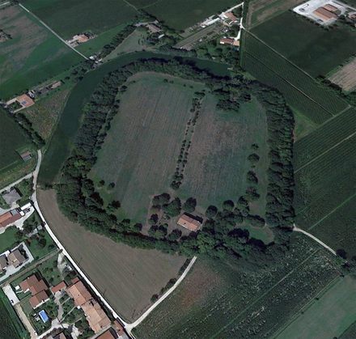

Le Motte consistono in un terrapieno che si eleva per tre-quattro metri di altezza da una piatta campagna a poca distanza dalla strada statale 53 Vicenza-Treviso. La forma è un quadrilatero-ovoidale oblungo di circa 300 metri; il bordo dell’elevazione è completamente colonizzato da un boschetto e una conca di campi coltivati con una vecchia casetta. La Motta era un villaggio fortificato dell’età del ferro che era circondato da un muro di terrapieno a scopo difensivo. Attualmente è coperto da siepi e vegetazione che danno riparo a vari tipi di animali, anche volatili. Gli abitanti scavarono un vallo piuttosto largo che si riempiva naturalmente d’acqua; possiamo definirla una “città murata“ dove all’interno della struttura prospettica si sviluppa il villaggio di paglia fango e legno. I primi insediamenti sono paleo-veneti, popolazioni dedite principalmente all’allevamento, all’uso del cavallo e all’agricoltura organizzata. Altre civiltà approfittarono di questo territorio: furono i longobardi e i romani. In questo luogo sono stati ritrovati dei manufatti in bronzo, pietra e ceramica che oggi sono conservati presso il Museo Archeologico di Cittadella.
